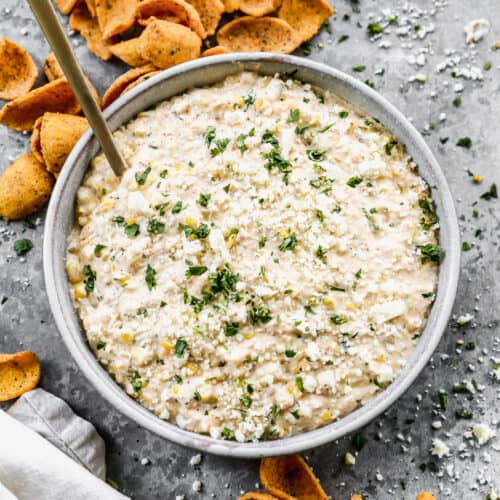

Street Corn dip

Description
This Street Corn Dip recipe is a quick and easy way to enjoy the flavors of Mexican Street Corn.
It has fresh corn on the cob (or frozen), diced chilies, and onion sautéed then tossed in a flavorful and creamy sauce. It’s a 15-minute dip that’s sure to be a winner!
Ingredients
- 1 Tablespoon olive oil
- 1/3 cup white onion , diced
- 1 diced green chiles , canned, mild
- 1/3 cup water
- 1 cup corn* , or more, if desired
- 2/3 cup mayonnaise
- 1 cup plain Greek yogurt*
- 1 teaspoon chili powder
- 1 teaspoon garlic powder
- 1 teaspoon tajin
- 1 lime , juice from
- 2 Tablespoons fresh chopped cilantro , plus extra for garnish
- 1 cup shredded cheddar cheese
- 1/2 cup shredded cotija cheese or queso fresco , (optional)
- Salt and pepper , to taste
- Chips , for serving
Steps
- Heat a skillet over medium heat. Once hot add oil. Once hot, add onion and sauté 3 minutes.
Add corn, diced green chiles and water. Cover and cook, stirring occasionally, until corn is tender (about 5 minutes). Remove from heat.
- In a separate bowl mix together mayo, yogurt, chili powder, tajin, garlic powder, cilantro, lime juice, and cheddar cheese. Stir in corn mixture from skillet.
Season to taste with salt and pepper. Sprinkle fresh cilantro and cotija cheese on top, if desired.
- Serve warm or cold (dip will thicken as it chills). Serve with chips for dipping.